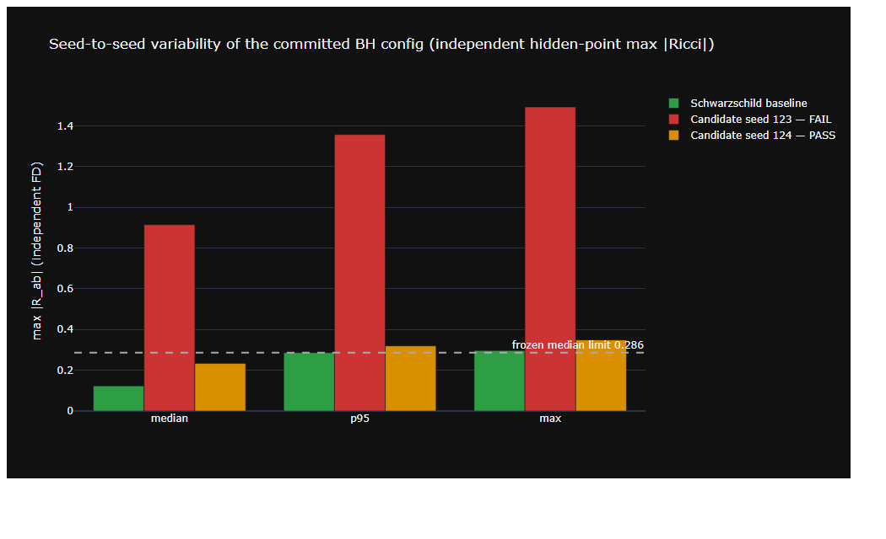

software + reproducibility study
Checking an AI's black holes
An independent curvature evaluator for machine-learned spacetimes, and the first audit run with it: five retrainings of a published neural black-hole configuration. The exotic geometry reproduced five times out of five; the Einstein equation itself held in two of five — and the model's own loss could not tell the difference.
2026-08
DOI 10.5281/zenodo.21915627
MIT
20 known-answer tests, CI on Linux/Windows
